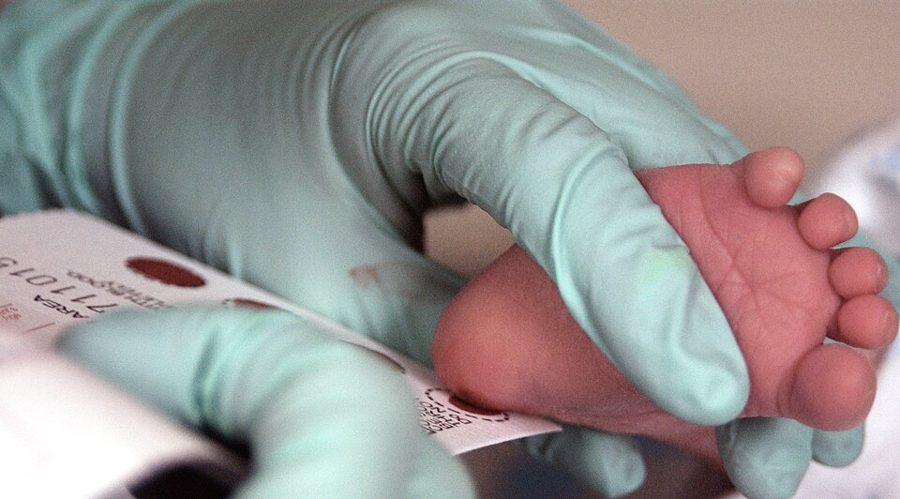
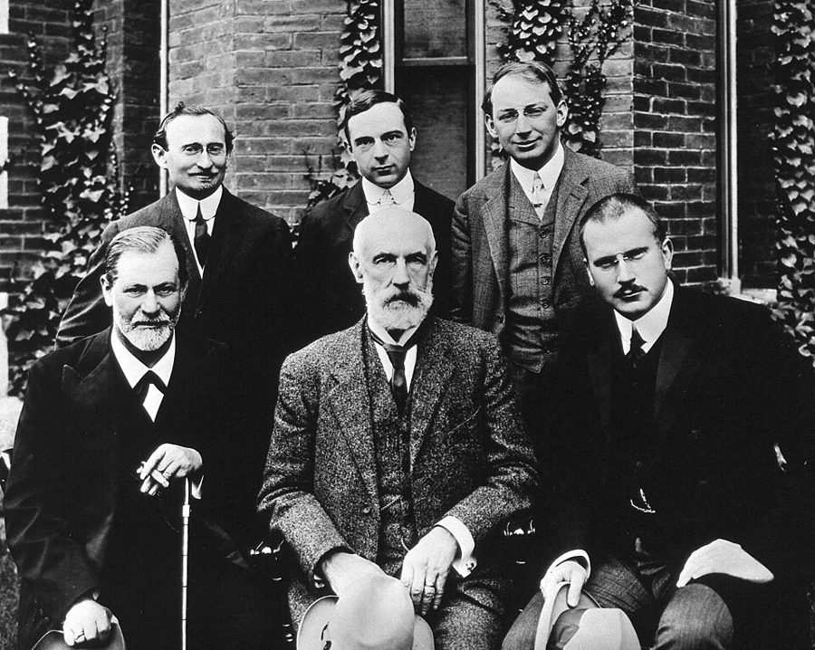

读之前
这一页是报告 13 的后半：6 月 11 日到 13 日，三条，地点是芝加哥的一场国际心理学大会。查理仍然对着录音机口述，由别人打成字。台下坐的是一大群专业学者。读的时候抓两条线：一条是他怎么重新估量 Nemur、Strauss、Burt 这几个他一直仰望的人；一条是在会场上，别人怎么谈论他和 Algernon，他听着有什么感受。
手术后三个多月，智商到了 185 左右。已经离开面包店，Welberg 基金会开始从经费里给他发薪水。他越来越受不了 Nemur 把他当实验品，好像手术前他不算一个人。和 Alice 吵过一架，她不来芝加哥。4 月他偷听到 Strauss 说在大会上发表还太早。6 月 10 日起他对着录音机口述；飞来的路上，安全带勾出了 Dr. Guarino 的回忆。
读的时候带着这几个问题。不用先找答案，读完回来对照「检查一下理解」。
饭店的派对上，查理问了 Nemur 一个问题。Strauss 怎么解释 Nemur 的反应？查理从中得出的结论，Burt 怎么看？§1
查理为什么说自己「一辈子都是 exceptional」？这个词在这里是谁的说法、带着什么口气？§2
大会上，留意查理坐在哪里、身边是什么，台上每个人发言时他在想什么。他生气，到底气的是什么？§3
分节地图
这一页有三条带日期的报告。读完一条打个勾；每条下面的英文是那一条开头的几个词，在 Kindle 里搜它就能跳过去。没读的那几行先模糊着，免得提前看到情节，点一下就能看清。全页约 5200 词，一次读完。
6 月 11 日约 1800 词 The confusion began from the moment … 饭店、派对、夜里散步。留意查理问 Nemur 的问题，和 Strauss、Burt 各怎么说。 6 月 11 日（续）约 500 词 Am I a genius? I don’t … 没有对话的一段独白。留意他怎么问「我是谁」。 6 月 13 日约 3000 词 I’m dictating this under great emotional … 大会正式开场。留意台上的座次、每个人讲了什么，查理一边听一边在想什么。
背景：书里默认你知道的事
按在书里出现的顺序排，标题前是节号。人名后面括号里是中译本的译名，读者想对照译本时用。
§1 去芝加哥的几个人报告 12 里说，这是在芝加哥开的一场国际心理学大会，Nemur 要在会上发表实验的初步报告。下面几张卡片只写你此刻已经知道的。
Professor Nemur（Harold） 尼姆教授 心理学教授，实验的主持人。4 月查理偷听到他坚持要在芝加哥发表，说自己是项目的资深负责人。
Dr. Strauss（Jay） 斯特劳斯医生 精神科兼神经外科医生，手术用的是他的技术，他也给查理做谈话治疗。4 月他认为六周后就发表还太早。
Burt Selden 伯特 心理学研究生，给查理和 Algernon 做测验。让查理对着录音机口述报告，就是他出的主意。
Algernon 阿尔吉侬 做过同样手术的小白鼠。报告 12 里查理说，他和 Algernon 是 Nemur 这次报告的「头号展品」。
White、Clinger 怀特、克林杰 Beekman 大学的两位教授，这一页第一次出场。
§1 苯丙酮尿症苯丙酮尿症（phenylketonuria，简称 PKU）是真实的遗传病。1934 年挪威医生 Følling 在两个智障孩子的尿里查出异常的物质，确认了这种病。病人体内分解苯丙氨酸（蛋白质里都有的一种氨基酸）的那种酶不起作用，苯丙氨酸越积越多，伤害正在发育的大脑。1950 年代起医生用严格限制苯丙氨酸的饮食治疗，1960 年代有了新生儿采血筛查。这一页是书里第一次说出查理的病名。Nemur 讲的「错钥匙」机制和手术是小说的设定，读的时候和真实的病分开。

给一个两周大的婴儿采血，做苯丙酮尿症筛查（2007 年）。血滴在卡片的圆圈里。U.S. Air Force photo/Staff Sgt Eric T. Sheler，公有领域，维基共享资源 §1 书里虚构的学者和期刊查理拿来问 Nemur 的两位学者 Rahajamati、Tanida，他们的论文、酶「融合」的理论，和那本《印度精神病理学学报》（Hindu Journal of Psychopathology），都是书里虚构的，不必去查。§3 大会上念的几篇论文（Zellerman、Worfel、Clinger 的）也一样。这两位学者一个像印度人的名字，一个像日本人的名字；留意 Nemur 接下来怎么评价这两个国家的研究。
§1 查理盘问 Strauss 的那张单子查理一样一样问 Strauss 懂什么，列出来的是：物理到量子场论（把量子力学和狭义相对论合起来描述粒子的理论）为止；地质学里的地貌学、地层学、岩石学；微观和宏观经济学；数学里的变分法（求「让某个量最小的那条曲线」一类问题），以及巴拿赫代数、黎曼流形（都是大学以后才学的抽象数学，后者属于黎曼几何，广义相对论用的就是它的推广）。本站的看法：一位精神科兼神经外科医生不懂这些，再正常不过；这张单子量出来的，更多是查理此刻的标准。
§1 弗洛伊德、荣格、巴甫洛夫、华生Burt 说 Nemur 不是这四个人里的哪一个。四人都是心理学史上开宗立派的人物：弗洛伊德（Sigmund Freud）创立精神分析；荣格（Carl Jung）早年和弗洛伊德走得很近，后来另立分析心理学；俄国生理学家巴甫洛夫（Ivan Pavlov）用狗做条件反射的实验；美国的华生（John B. Watson）1913 年提出行为主义，主张心理学只研究看得见的行为。Burt 紧接着说「伟人们都在忙着造炸弹」，大概指冷战时期的核武器竞赛。

1909 年 9 月，美国马萨诸塞州 Worcester 的 Clark 大学门前。前排左起：弗洛伊德、G. Stanley Hall、荣格；后排左起：A. A. Brill、Ernest Jones、Sándor Ferenczi。与书里的大会无关。作者不详，公有领域，维基共享资源 §2 exceptional：教育界的说法美国的特殊教育把需要特别对待的孩子统称为 exceptional children（特殊儿童）：天资特别高的、智力障碍的、有其他残障的都算在里面。1922 年一群教育工作者成立的组织，1958 年起就叫特殊儿童委员会（Council for Exceptional Children）。查理借 Burt 的口气笑话的，是这一行不停换名字的习惯：一个词沾上了贬义，就换一个还没有什么意思的新词。这件事后来怎样，见读后部分的「对照今天」。
§3 学术大会那时美国的学术年会常在大饭店里开几天：大堂里同行寒暄，各个会场轮流有人上台宣读论文，主席介绍、读完答问。书里 Beekman 的报告排在大宴会厅（Grand Ballroom）。有的团队会事先给报社发新闻稿，记者和摄影师到场。书里写饭店大堂有厚重的巴洛克式家具和弯曲的大理石楼梯，下面这张照片可以帮你想象。
芝加哥 Palmer House 饭店的大堂，2013 年。只是一家真实的芝加哥老饭店今天的样子，和书里的饭店无关。Tony Brooks，CC BY 2.0，维基共享资源
§3 T 形迷宫T 形迷宫（T-maze）是动物学习实验里最简单的一种迷宫：老鼠从起点沿一条直道跑到岔口，只能选左或右，一边的尽头是放着食物的目标箱（goal box）。记下它试了多少次才学会每次都选对，就能研究学习和记忆。会上有的论文比的就是这一类细节：目标箱放左边还是右边，迷宫的拐角是圆的还是方的。查理和 Algernon 比赛时走的迷宫，比这复杂得多。
起点箱
目标箱
放着食物
目标箱 空的
选择点：向左还是向右
老鼠从这里出发
选对了
选错了
本站示意图：T 形迷宫。老鼠从起点箱出发，到岔口选一边；食物放在哪一边、目标箱什么样，都可以拿来做变量。 词与短语
三类：紫边的「查理拼的」是他拼错的词，先写还原的拼法；黄边的「每个字都认识」是熟词生义、俚语、别人话里的弦外之音；其余是这里用法特别的词。斜体小字是原句里的几个词，在 Kindle 里搜它就能找到原文，拼错的照拼错的抄。
§1 6 月 11 日
line of command
… everyone in the line of hotel command …
（饭店里）一级管一级的那串人
军队里说 chain of command 或 line of command（指挥链），这里中间插了个 hotel：从行李员一路往上到经理。
collar
… as Nemur tried to collar officials …
（硬）拦住人说话
collar 本义是衣领，作动词是揪住领子，口语里指把人拦下来不放。
phenylketonuria
… type of phenylketonuria that Charlie was …
苯丙酮尿症
书里第一次说出查理的病名，见「背景」。
maverick
… shall we say, ‘maverick enzyme’ that creates …
离群捣乱的（酶）
maverick 原指没打烙印、离群乱跑的小牛，转指不守规矩、特立独行的人。shall we say 是「姑且这么叫吧」：Nemur 在现场给它起名字。
seize the floor
… but Nemur had seized the floor …
抢到了发言权
the floor 指会场上的发言权，have the floor 是「正在发言」。
competitive inhibition
… competitive inhibition of enzymes. Let …
竞争性抑制
真实的生化术语。教科书的「锁和钥匙」比方里，锁是酶，钥匙是被酶加工的分子；竞争性抑制是一把插得进、转不动的错钥匙占住了锁。Nemur 把酶说成钥匙，比方用了，对象换了。他说的这套病理是小说的设定。
crow
… “Ah!” crowed Nemur, “I said …
得意洋洋地说
crow 是公鸡打鸣，作说话的动词是「得意地嚷」。
peroration
… at the height of his peroration.
（演说的）收尾高潮；长篇大论
修辞学里指演说最后慷慨激昂的总结部分。查理用这个词，带着讽刺。
Hindu
… in the Hindu Journal of Psychopathology …
（期刊名里）印度的
Hindu 今天一般指印度教、印度教徒；印度的语言是 Hindi（印地语），后面查理反问 Strauss 时说的就是 Hindi。二十世纪前期的英语里 Hindu 常泛指印度人，不论信什么教（美国 1910–1930 年代的人口普查就这样归类），这种用法后来过时了。期刊是书里虚构的。
shrug off
… tried to shrug it off.
不当回事地带过去
shrug 是耸肩：耸耸肩就把它抖掉了。
Oh, come now
… “Oh, come now, Charlie. Just …
得了吧
带点长辈口气的不以为然。查理随后对 Strauss 说的 Oh, come on now 是同一个意思。
the final word
… doesn’t make him the final word …
说了算的权威，定论
have the final word 是「最后拍板」。Nemur 的意思是：理论是谁先提出的，不等于后来的实验也由他说了算。
linguist
… I’m an even worse linguist than …
（会几种外语的）语言通
linguist 常见的意思是语言学家，这里指懂外语的人。Strauss 是说自己的外语比 Nemur 还差。
comb
… all the journals will be combed …
（把期刊）仔细翻查一遍
comb 是梳子，像梳头一样一遍遍过。
get along
… and enough Swedish to get along.
（语言）够用，应付得过去
get along 常见的意思是「相处」，这里是「凑合过得去」。
in store for
… revelations that were in store for …
正等着（某人）的
store 是储存：早已备好、就要落到某人头上。
Exhibit A
… “Exhibit A, star of the show. …
头号展品
法庭上证物按 A、B、C 编号，Exhibit A 是最先拿出来、最要紧的那一件，口语里指「最典型的例子」。Burt 半开玩笑；报告 12 里查理自己也说过 prime exhibits。
cowboy
… one of these motorized Chicago cowboys …
（开车）横冲直撞的家伙
cowboy 在口语里指莽撞、不守规矩的人，motorized 是「开着车的」。
mugged and rolled
… mugged and rolled on State Street?
被当街抢劫、掏空口袋
mug 是当街抢；roll 是俚语，趁人醉倒或被打倒时搜走身上的钱。State Street 是芝加哥市中心的一条主要商业街。
the old man
… The old man is on edge.
老头子（指上司 Nemur）；紧张不安
the old man 口语里可以指父亲，也常指老板、导师，这里是 Burt 背后称呼 Nemur。on edge 是坐立不安。
phoniness
… “And phoniness and shallowness,” I added.
虚伪做作
phony 是美国口语的「假的、装模作样的（人）」，同一段里查理接着叫他们 phonies。1951 年的小说《麦田里的守望者》里，主人公动不动就说别人 phony。
luncheonette
… We turned into a luncheonette for …
小快餐店
卖简餐和咖啡的小店，常有一排柜台和高脚凳。
come a long way
… you’ve come a long way kind …
进步了很多
不是「走了很远的路」。后面的 kind of fast 是「而且快了点」。
lopsided
… But you’re lopsided. You know …
（发展）不平衡，一边倒
本义是一边高一边低。Burt 接着就解释了：知道得多、看得清，可是没有长出理解和宽容。
ride someone
… a woman like her riding you, …
骑在某人头上，不停地催逼
像骑马一样驱赶，口语里是不停地逼、挑剔、使唤。
§2 6 月 11 日（续）
exceptional
… I’m exceptional—a democratic term used …
特殊的（教育界的说法，高低两头都算）
见「背景」。查理说自己「一辈子都是 exceptional」：从前在低的那头，现在在高的那头。译本：「“罕见”适用于整个范围的两个极端」。字面不错。只是「罕见」听不出是个现成的名目：exceptional children 是美国特殊教育的正式用语，高低两头的孩子都归在里面。
deprived
… damning labels of gifted and deprived …
（教育行话）条件不利的；这里是 retarded 的委婉说法
gifted 是「有天分的」，deprived 本义是「被剥夺了的」，教育界拿它说家境、文化条件差的孩子。括号里说，gifted 和 deprived 原先指的就是 bright（聪明）和 retarded（迟钝）：这两个已经是委婉说法，现在又被 exceptional 换掉。
keep someone in his place
… try to keep me in my place.
让人安守本分，别越位
常用来说压着身份低的人。查理马上按字面追问 What is my place?：「我的位置」到底在哪里。
walking on stilts among giants
… a man walking on stilts among giants …
踩着高跷混在巨人中间
让人想到牛顿那句「站在巨人的肩上」：站在肩上是借前人看得更远，踩高跷是装得一样高。
§3 6 月 13 日
walk out on
… I’ve walked out on the whole …
撂下（某事、某人）一走了之
比 walk out（走出去）多了个 on，就是扔下不管。
where it all happened
… was where it all really happened.
真正的大事发生的地方
it all 泛指「一切要紧的事」，口语里说 where the action is。译本：「这里才是真正带来希望的地方」。原文说的是这里才是学问真正在发生的地方，没有「希望」。
sterile
… from the sterile college discussions, …
枯燥、出不了成果的
sterile 本义是不育的、无菌的。
bring up the rear
… Burt and I brought up the rear.
走在最后
本是行军殿后的说法。
retardate
… with a retardate adult in just …
智力迟滞者（旧称）
当时临床文献里的名词用法，今天不这么说了，听起来带贬义。
Laideezzz and gentulmennnnnn
… Laideezzz and gentulmennnnnn. Step right this …
Ladies and gentlemen 女士们、先生们
不是拼错，是查理在纸上模仿马戏团招徕客人的腔调，把音拖长。Step right this way 也是吆喝的套话。side show 在报告 9 里出现过：派对上 Ellen 说他是 one man side show。译本：「来看这场附带的好戏」。side show 在这里是展示怪人的杂耍棚，译成「附带的好戏」，那层刻薄就没了。
moron
… A mouse and a moron turned …
低能者（旧称）
1910 年前后美国心理学家 Goddard 把它定为智力障碍最轻一级的临床名称，后来变成骂人话。这里是查理用它说自己。
a chip on one’s shoulder
… here with a chip on my shoulder.
憋着一股气，随时准备跟人吵
最早的记载是 1830 年纽约长岛的一份报纸：男孩想打架，就把一块木片放在肩上，谁敢碰掉就开打。常听到的另一个来历（十八世纪英国船厂工人扛木片回家）连不上这个用法。译本：「带着浑身火药味」。译得贴切，意思和口气都到了。
goal box
… left-handed goal boxes in a T-maze …
目标箱
迷宫尽头放食物的格子，见「背景」的 T 形迷宫。
put through one’s paces
… Algernon was put through his paces …
（被拉出来）展示本领
本来说驯马的人让马把各种步法走一遍给人看。
the mantle of
… trying on the mantle of his …
（老师的）衣钵
《旧约·列王纪下》里，先知以利亚升天时外衣（mantle）落下，由弟子以利沙接过，mantle 就成了「传承」。try on 是试穿：Burt 在学老师的样子。
rat race
… the rat-race of academic preferment.
没完没了的激烈竞争
像老鼠赛跑一样你追我赶；preferment 是升迁。这场会上讲的全是走迷宫的老鼠，这个词读着像双关（本站的读法）。译本：「学术升迁竞技场」。意思到了，老鼠没了。
duck the question
… Burt ducked the question.
躲开问题
duck 作动词是低头闪躲。
a function of
… one being a function of the other.
随另一个而变的结果
数学里「y 是 x 的函数」的那个 function。Burt 的意思是：两件事可能有同一个原因，不一定是一件引起另一件。
electric stylus
… maze with the electric stylus.
通电的描针
报告 1–6 里查理和 Algernon 比赛时手里拿的那支「电棒」（他当时写成 electrik stick），走错了指头会被电一下。
roar
… it happened the audience roared.
哄堂大笑
roar 是吼，说人群时常常是笑得轰响。
catch the spirit
… as Burt caught the spirit and …
受了气氛感染，跟着凑趣
不是「抓住精神」。
newly minted
… something newly minted in their private …
刚铸出来的
mint 是造币厂，newly minted 本义是刚铸好的硬币，后面接着 treasury（金库）：一枚他们自家金库里的新币。
waiting period
… evaluation of the waiting period necessary …
观察期
要等多久才能说变化是长久的。
stick
… see if this change would stick.
保持下去，留得住
stick 是粘住，口语里说变化、决定、名字等「定下来不掉」。
feeble-minded
… In place of a feeble-minded shell, …
低能的（旧称）
20 世纪前期美国官方和学界的常用说法，泛指各种程度的智力障碍。今天不用了。
non-experimentalists
… women (non-experimentalists?) tried to …
不做实验的人（吧？）
查理的挖苦：天天和实验动物打交道的人，不会这样大惊小怪。括号里的问号是在打趣。
lead someone a merry chase
… led them a merry chase.
让人追得团团转
merry 在这里不是说追的人开心，是说被追的一方把他们耍得够呛。
powder room
… screaming out of the powder room, …
女洗手间
委婉说法，字面是女士补妆的房间。
stay
… the searching crowd was stayed by …
（被）挡住，停住
stay 作及物动词是书面语「阻止、使停下」，不是「待着」。
the handwriting on the wall
… by the handwriting on the wall—Ladies.
墙上的字（凶兆）
典出《旧约·但以理书》：巴比伦王伯沙撒的宴席上，一只手在墙上写字，预示王国覆灭，这个说法就成了「不祥之兆」。这里字面上就是墙上写着的 Ladies。译本：「墙上写着“女士”的牌子」。字面译了，典故没了。
查理的文字
切到「长词」：报告 12 的三条都在 4% 上下，这一页第一条和最后一条跳到 8% 以上，到这里为止只有 5 月 15 日那一条比它高。长词从哪里来，读一读就知道：Nemur 讲酶的那一大段、Strauss 的手术报告、会上论文的题目，还有查理自己列的那一串学科名。拼错的词差不多是零。
再切到「句长」：13a 飞机上那段回忆平均九个词一句，这一页从 12 涨到 17。这些话是对着录音机说出来、再由人打成字的，已经没有拼写可看，剩下的是声音。6 月 13 日这一条是在回纽约的飞机上说的：开头和结尾用现在时，中间整场大会用过去时回述。说到最后，句子又变短了：要去见父母，越快越好；时间也许不如他以为的那么多。
值得停下来的句子
Strange about learning; the farther I go the more I see that I never knew even existed.— §2，6 月 11 日夜里的独白。本站译：学习这件事真奇怪：我走得越远，越看见更多我从前连有都不知道的东西。
句子是口语的省略：开头省掉了 It’s，后半句 see 和 that 之间省掉了 things 一类的词。不久前（a short while ago）他还以为自己能学会世上的一切，现在只盼知道它们在哪里、懂其中一粒。下一行只有三个词：Is there time? 这一页的最后一句，他又回到了时间上。
I’m a human being, a person—with parents and memories and a history—and I was before you ever wheeled me into that operating room!— §3，6 月 13 日，Nemur 作总结时查理想喊没喊出来的话（原文是斜体）。本站译：我是人，是一个人，有父母、有记忆、有来历，在你们用轮床把我推进那间手术室以前，我就在了！
最重的是 and I was：was 后面什么也没接，就是「我存在」。Nemur 刚说，在这个实验之前，查理·戈登其实并不真正存在。查理一项一项反驳：父母、记忆、来历，都是这几个月在报告里一点点找回来的。这一页结尾他说的第一件要做的事，就是去见父母。
读完想一想
台上依次发言
Clinger T 形迷宫论文
Burt Algernon 的演示
Strauss 手术和照片
Nemur 总结
手指摸上笼门
原来瞒着我 台下对着影片笑
不知道拍过照片 觉得哪里不对
「之前不存在」 想通那个错误
拉开笼门
冲动一次比一次难压住
本站示意图：6 月 13 日大宴会厅里的发言顺序（上），和每人发言时查理在想什么（下）。他说那个错误是 Strauss 讲话时开始觉得不对、Nemur 讲话时想通的。 1. 查理说 Nemur 和 Strauss 是「骗子」，Burt 说他「一边倒」：知道得多、看得清，却没有理解和宽容。你站在哪一边？
本站的看法 两边都有道理。Burt 说得对：他们从没说过自己完美，查理的「骗子」是气话，§2 里查理自己也承认要提防看不起他们。可查理的不安也不全是多疑：他们没读过最新的批评，就准备上台宣布成功。这一页里查理真正怕的，是自己的命运握在不知道全部答案的人手里。
2. 影片放出来，台下的科学家一次比一次笑得厉害。没过多久，查理看着一群人满饭店追一只白鼠，觉得这是很久以来最好笑的事。这两种笑一样吗？
本站的看法 有一样不同：影片里的查理不知道自己被拍下来，也没人问过他；追白鼠的人是自己跑起来的，而这场混乱是查理放出来的。可两种笑都是看着别人狼狈而笑。查理先替科学家开脱，说他们忍不住；轮到他，他也有了恶作剧的冲动。书没有替哪一边说话，它让读者看到查理也能站到笑的那一边。
3. Nemur 说，实验之前查理·戈登并不真正存在。台下的人大概听成一句夸张的赞美，查理却气得想喊。一个人的过去，能被「实验前后」这样划掉吗？
本站的看法 Nemur 是想说变化有多大，可这句话等于说手术前的三十多年不算数。查理这几个月一直在做相反的事：在报告里把童年、父母、面包店的日子一点点找回来。本站的看法：这一页他气的不只是被当成展品，而是有人要替他决定，他从哪一天才开始算一个人。
对照今天
成立 后来的事实印证了这个说法部分成立 一部分对，一部分被后来的事改了被改写 后来的事实推翻了它，或者完全变了样书里的说法：查理那种苯丙酮尿症起因不明，可能是辐射或病毒害得基因出了缺陷，脑组织的损伤不可逆（Nemur，§1）
书里 Nemur 猜是辐射或病毒造成了缺陷基因，缺陷基因造出一种「捣乱的酶」，像一把转不动的错钥匙占住锁，挡住了正确的酶，毁了脑组织；毁掉的组织不能复原，但过程可以逆转。这套机制是小说的设定。
当时 1934 年 Følling 确认了这种病；1950 年代查明病人缺的是分解苯丙氨酸的那种酶的活性，并开始用低苯丙氨酸饮食治疗；1963 年 Guthrie 发表了从婴儿脚跟取一滴血就能筛查的方法。
今天 它是常染色体隐性遗传病：父母各传下一份有缺陷的基因，那种酶就几乎不起作用。不是多出一把错钥匙，而是缺了一把对的钥匙。出生后尽早控制饮食，孩子多半能正常发育；已经造成的脑损伤难以挽回，这一点 Nemur 说得对。许多国家给新生儿常规筛查，2018 年美国又批准了一种给成年病人用的酶疗法。核对于 2026-10。依据：美国国家儿童健康与人类发育研究所（NICHD）的 PKU 介绍，期刊 International Journal of Neonatal Screening 的综述 The Early History of PKU（2020），美国食品药品监督管理局 2018 年批准 Palynziq 的报道。
书里的说法：exceptional 这类词一旦对谁有了意思，就会被换掉（查理转述 Burt 的挖苦，§2）
书里 exceptional 高低两头都指，用来避开 gifted、deprived 这样要命的标签，而这两个词当初又是用来代替 bright、retarded 的。查理说，等 exceptional 有了意思，他们会再换。
当时 美国特殊教育早就用 exceptional children 这个说法，1958 年起有了「特殊儿童委员会」这个名字。书里的 feeble-minded、moron、retarded 都曾是正式的临床用语。
今天 换词还在继续。心理学家 Pinker 1994 年把这个现象叫作「委婉语跑步机」（euphemism treadmill）：新词顶替旧词，过一阵新词也沾上了旧的意味。美国 2010 年的 Rosa’s Law 把联邦法律里的 mental retardation 改成 intellectual disability（智力障碍），DSM-5（2013）也用这个词。exceptional 至今还是特殊教育的用语，那个委员会也没改名。核对于 2026-10。依据：特殊儿童委员会（CEC）的历史介绍，Steven Pinker 在《纽约时报》的文章 The Game of the Name（1994），Rosa’s Law（2010）。
检查一下理解
先在心里答，再点开。答错的那题，回书里把对应那一条再读一遍。
1.（§1）查理问起的那篇文章，Nemur 为什么答不上来？ Strauss 说 Nemur 根本没读过：那些论文刚发表不久，还没有译文，而 Nemur 读不了那几种文字，Strauss 自己也一样。Nemur 当场拿「美国和英国的研究远胜印度和日本」把话岔开，转身和别人聊天去了。
2.（§1）照 Burt 的说法，Nemur 为什么总是那么紧张？ 因为他的妻子 Bertha。Burt 说 Nemur 的教授职位是她弄来的，Welberg 基金会的经费是她借父亲的影响争取的，这次过早在大会上发表也是她推的。
3.（§3）Burt 在台上说了 Algernon 的什么事，是查理以前不知道的？ Algernon 智力最高的时候，表现变得不稳定：有时饿着也不肯干活，有时解了题不吃食物，反而往笼壁上撞。Burt 说证据不够，不能断定是智力提高造成的。查理马上明白这件事一直瞒着他。
4.（§3）查理在台上想通的「错误」是什么？ 判断变化能不能长久的观察期，是照普通或迟钝的动物定的；智力被提高了两三倍的动物，观察期应该更长。所以他认为 Nemur 的结论下得太早。这是查理的判断，台上没有人发现。
5.（§3）Algernon 最后在哪里被找到？查理怎么把它带走的？ 在女洗手间的洗手台上，瞪着镜子里的自己。众人在门口停住，查理第一个进去，把它揣进外套口袋；大家分头去查通风管时，他拐进另一条走廊，坐电梯回房间收拾行李，用回程机票飞回纽约。
用一句话说这一页：
精彩回顾
隔几周回来，先看这几张卡片。想不起来的那张，点节号回到这一页，再回书里那一条。
一句话： 查理看清带他来的人也只是凡人，在台上被当成展品，于是带着 Algernon 离开了大会。
Who? 派对上查理问起一篇印度期刊上的论文，Nemur 一脸茫然。原来他和 Strauss 都读不了那几种文字，也没读过。
§1 小餐馆里的 Burt Burt 说查理「一边倒」：知道得多、看得清，却没长出理解和宽容。他们从没说过自己是超人，「你才是天才」。
§1 马戏团的开场白 坐上讲台时，查理想象主持人用马戏团的腔调吆喝：一只老鼠和一个低能儿，当场变成天才。主持人其实只说了几句客气话。
§3 影片里的自己 他不知道早期的测验被拍了下来。影片里他每被电一下就瞪大眼睛，接着又傻笑，台下一次比一次笑得厉害。
§3 洗手台上的 Algernon 一群人追着白鼠满饭店跑，最后在女洗手间的洗手台上找到它，正瞪着镜子里的自己。查理把它揣进口袋，带回了纽约。
§3